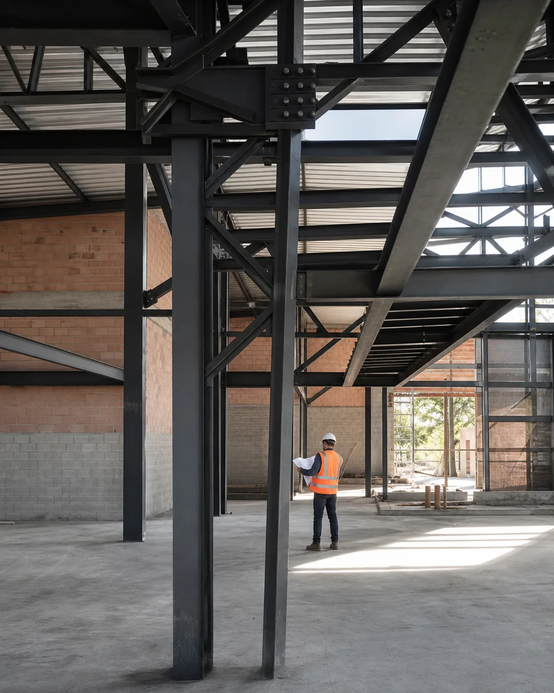
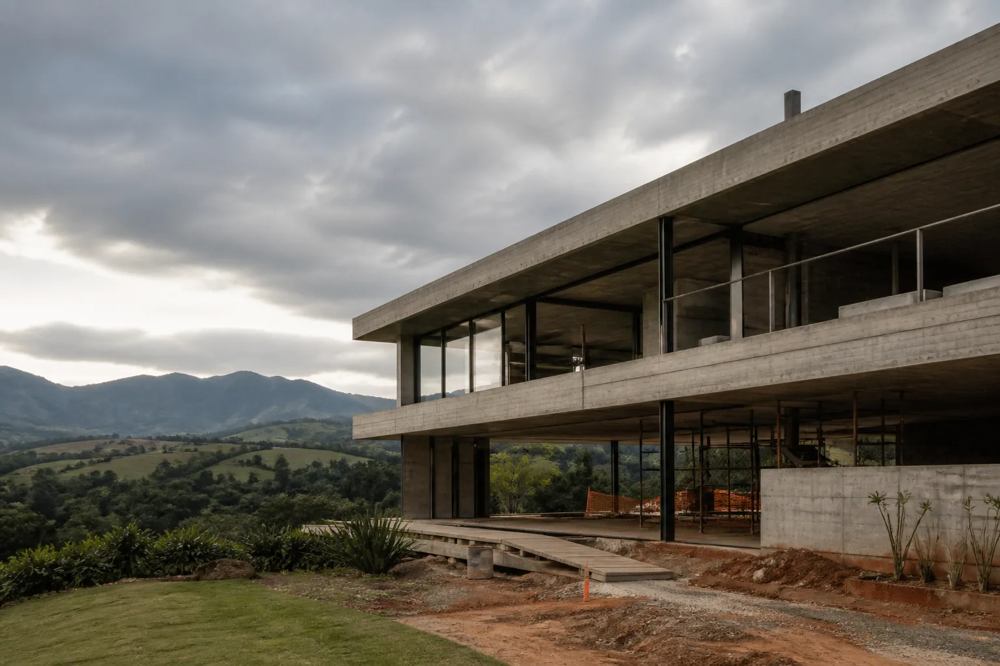

Projetos estruturais
Dimensionamento de fundações, pilares, vigas, lajes e estruturas para edificações novas, reformas e ampliações.
Residencial e comercial
Engenharia civil no Vale do Paraíba
Projetos, laudos e acompanhamento técnico para construir com decisões bem fundamentadas, do primeiro estudo à execução.
01 / Sobre

Projetos residenciais, comerciais e de infraestrutura, com atendimento técnico direto e responsável.
O trabalho combina análise estrutural, documentação clara e acompanhamento de obra. Cada solução parte das condições reais do terreno, do uso da edificação e das normas aplicáveis.
02 / Serviços
Do estudo inicial à execução, com escopo claro e decisões apoiadas em critérios técnicos.
Dimensionamento de fundações, pilares, vigas, lajes e estruturas para edificações novas, reformas e ampliações.
Residencial e comercialAvaliação de manifestações patológicas, condições de segurança e viabilidade de intervenções em estruturas existentes.
Diagnóstico técnicoVisitas técnicas, conferência de serviços e apoio às decisões que impactam prazo, qualidade e segurança.
Controle de execuçãoEstudos e projetos para movimentação de terra, escoamento de águas pluviais e redes de apoio à edificação.
Implantação e terrenoMemoriais, desenhos, especificações e peças necessárias para orientar a obra e apoiar processos de regularização.
Clareza documental03 / Atuação
Referências visuais das áreas atendidas. As imagens são ilustrativas e devem ser substituídas por registros de obras reais.



04 / Processo
Você entende o que será feito, por que será feito e quais decisões precisam ser tomadas.
05 / Região
Atuação regional para manter proximidade com o cliente, o terreno e a execução da obra.
06 / Contato
Informe o tipo de serviço, a cidade e o momento atual do projeto. Isso ajuda a tornar o primeiro retorno mais objetivo.
Telefone (12) 9XXXX-XXXX E-mail contato@seudominio.com.brDados de contato provisórios. Substitua antes da publicação.